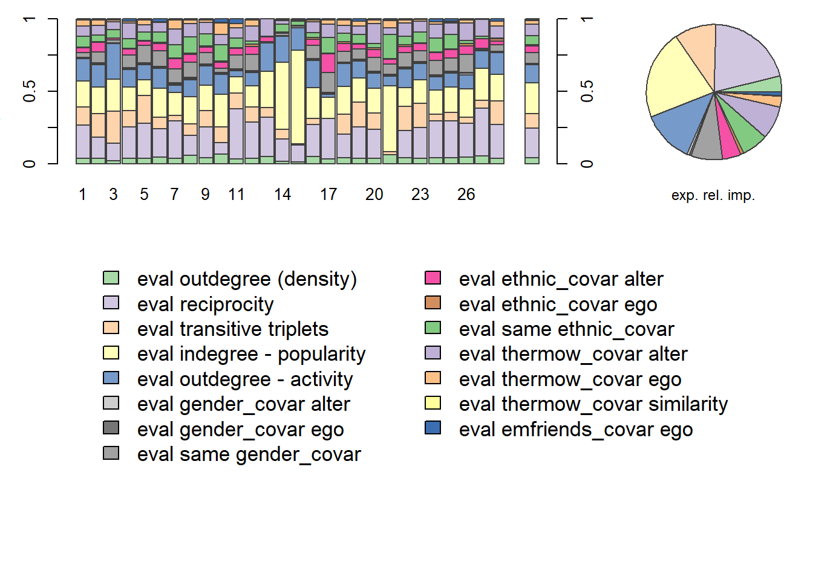
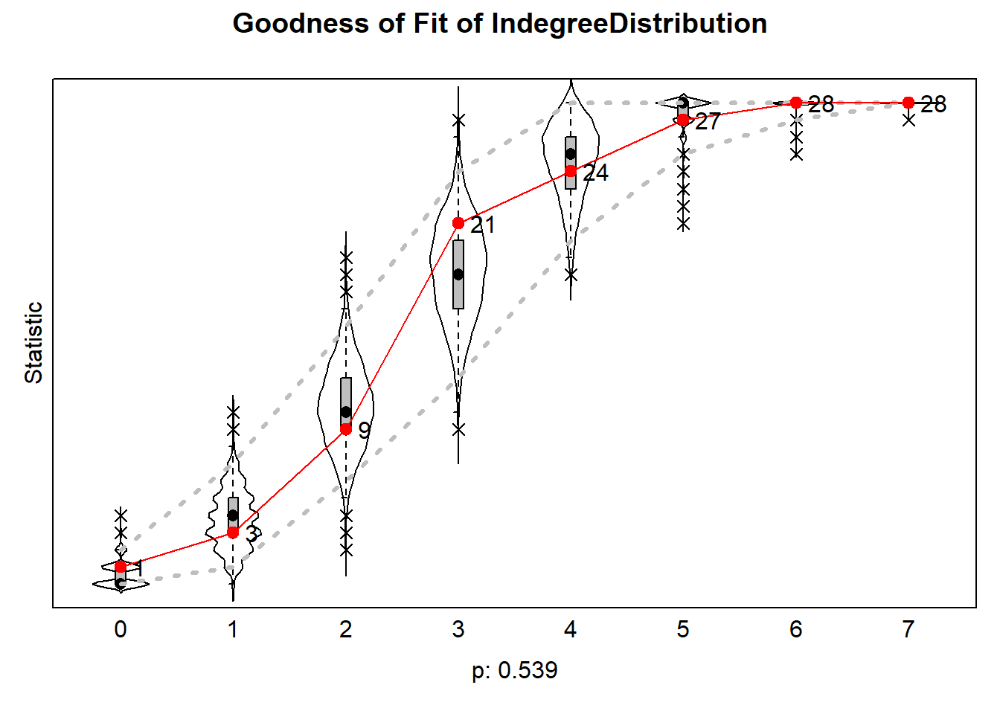
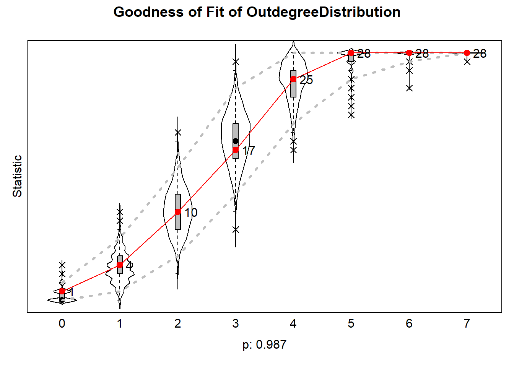
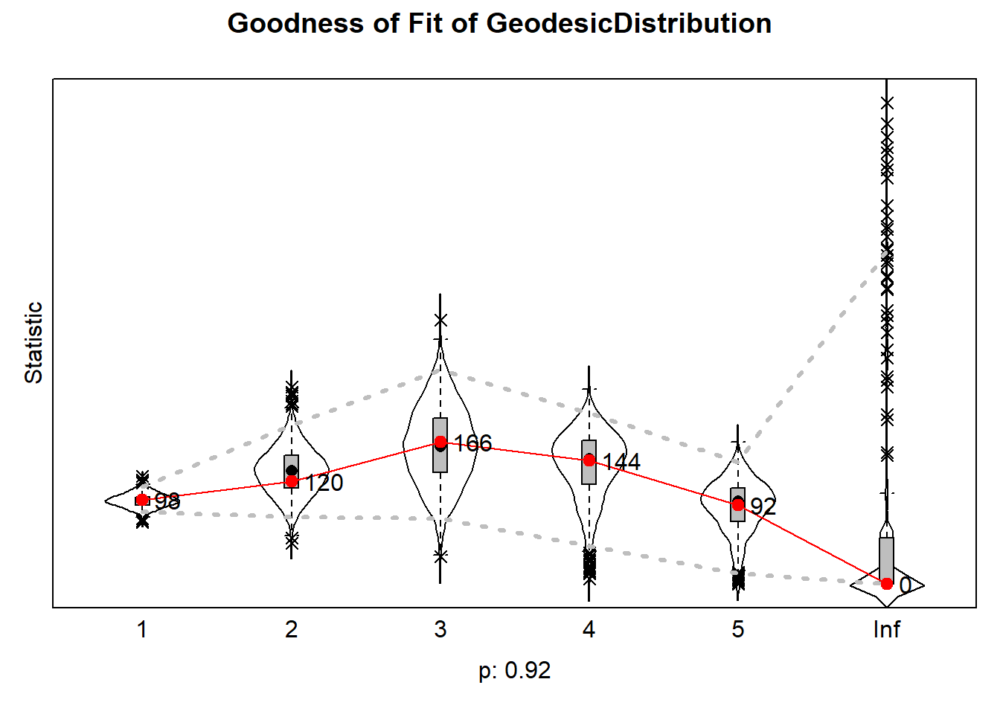
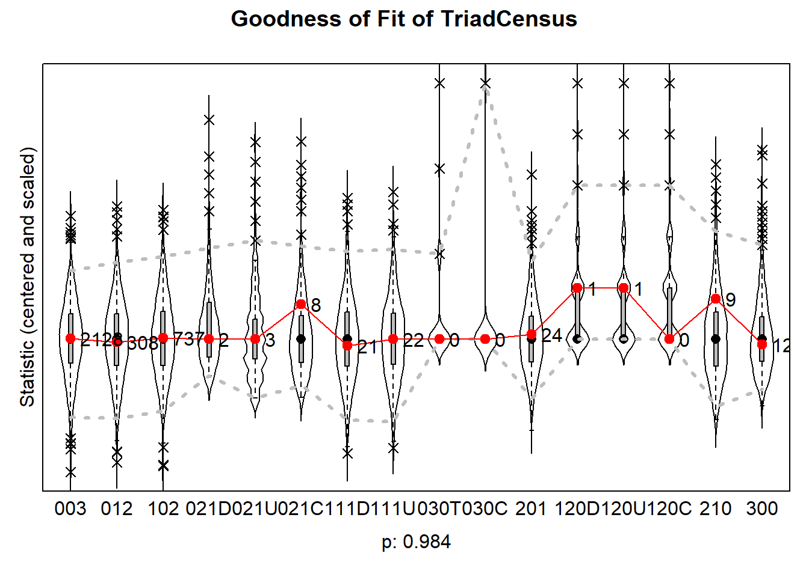
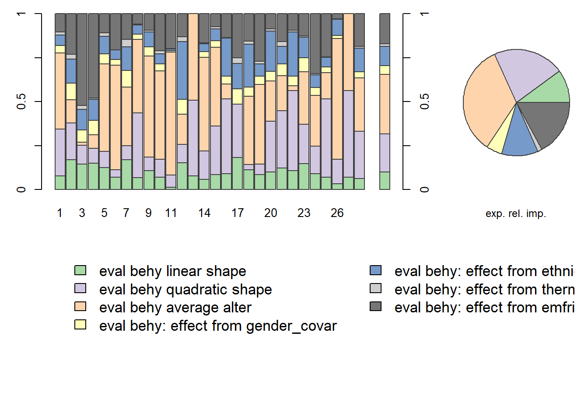
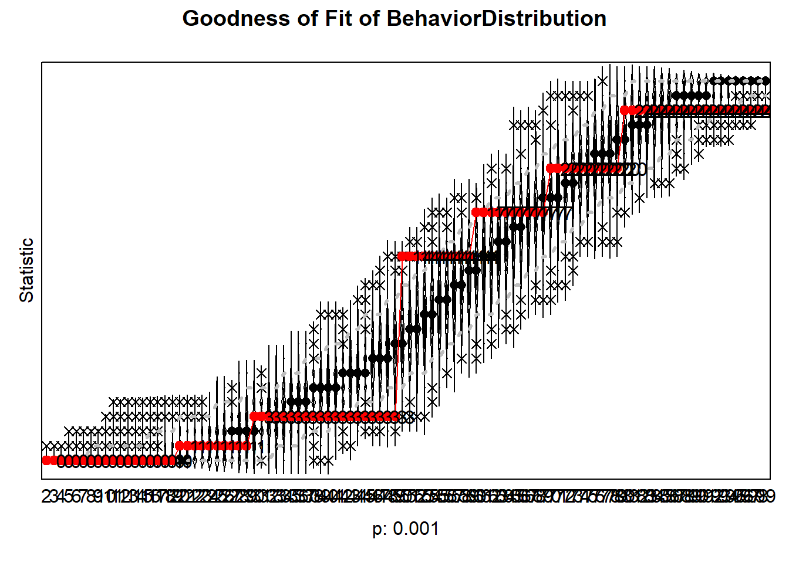

In this chapter, I analyze and describe the results of my RSiena analyses. Below, you can find the models and my interpretations, as well as the corresponding R code.
First, I construct my dependent variables and covariates, and prepare them for RSiena analysis by converting them to the right data objects.
# DEPENDENT VARIABLES -------------------------------------------------------------
# DV: NETWORK
library(haven)
tnss_net <- read_sav("./data/TNSS_wave_2010_mentors.sav")
tnss_pup10 <- read_sav("./data/TNSS_wave_2010_pupils.sav")
tnss_pup11 <- read_sav("./data/TNSS_wave_2011_pupils.sav")
library(dplyr)
library(tidyverse)
tnss <- left_join(tnss_net, tnss_pup10)
# view(tnss)
tnss_pup10 <- tnss_pup10 %>%
rownames_to_column(var = "id")
tnss_pup11 <- tnss_pup11 %>%
rownames_to_column(var = "id")
tnss_2waves <- left_join(tnss_pup10, tnss_pup11, by=c("id"))
# view(tnss_2waves)
tnss_2waves_c5 <- tnss_2waves %>%
filter(IDClass == 5)
view(tnss_2waves_c5)
c5 <- tnss %>%
filter(IDClass == 5)
c5_net <- c5 %>%
select(fr_1:fr_28)
net <- as.matrix(c5_net)
sum(diag(net) != 0)## [1] 0view(c5_net)
length(c5_net)## [1] 28net2 <- net
net2[1,2] <- 1
library(RSiena)
nety <- sienaDependent(array(data = c(net, net2), dim = c(dim(net), 2)), allowOnly = FALSE)
# DV: BEHAVIOR (ETHNIC MINORITY ATTITUDES)
id <- c5 %>%
dplyr::select("IDresp")
behy_pre <- tnss_2waves %>%
filter(IDresp.x %in% c5$IDresp) %>%
dplyr::select("IDresp.x", "thermo_minority", "thermo_minority_2") %>%
as.matrix() %>%
data.frame
id <- left_join(id, behy_pre, by=join_by(IDresp == IDresp.x) )
behy <- id %>% dplyr::select("thermo_minority", "thermo_minority_2") %>%
as.matrix()
behy## thermo_minority thermo_minority_2
## [1,] 20 50
## [2,] 44 50
## [3,] 65 30
## [4,] 63 70
## [5,] 65 20
## [6,] 50 80
## [7,] 52 30
## [8,] 10 50
## [9,] 50 70
## [10,] 72 50
## [11,] 100 50
## [12,] 50 70
## [13,] NA NA
## [14,] 84 60
## [15,] 26 80
## [16,] 100 50
## [17,] 75 50
## [18,] 60 50
## [19,] 50 80
## [20,] 86 60
## [21,] 30 50
## [22,] 98 50
## [23,] 41 100
## [24,] 39 80
## [25,] 2 50
## [26,] 90 100
## [27,] NA NA
## [28,] 10 60behy <- sienaDependent(behy, type = c("behavior"))
myAlgorithm <- sienaAlgorithmCreate(projname = "net", cond = F)## If you use this algorithm object, siena07 will create/use an output file net.txt .# COVARIATES ------------------------------------------------------------------
#view(tnss_pup10)
# gender
class(c5$gender)## [1] "haven_labelled" "vctrs_vctr" "double"gender <- as.numeric(c5$gender)
class(gender)## [1] "numeric"gender <- as.vector(gender) # 1 = woman
gender_covar <- coCovar(gender) # = constant covariate
class(gender_covar)## [1] "coCovar"# ethnicity
class(c5$ethnicity)## [1] "haven_labelled" "vctrs_vctr" "double"ethnic <- as.vector(ifelse(c5$ethnicity == 1, 0, 1)) # recode so that 1 = migration background, 0 = Dutch
ethnic_covar <- coCovar(ethnic)
class(ethnic_covar)## [1] "coCovar"# thermometer girls
class(c5$thermo_vrouwen)## [1] "haven_labelled" "vctrs_vctr" "double"thermo_women <- as.vector(c5$thermo_vrouwen)
thermow_covar <- coCovar(thermo_women) # would make sense to use this as a changing covariate, but I only have 2 waves, which is not enough input for a varCovar
class(thermow_covar)## [1] "coCovar"# number of ethnic minority friends
class(c5$minority_friends)## [1] "numeric"emfriends <- as.vector(c5$minority_friends)
emfriends_covar <- coCovar(emfriends) # same note about varCovar goes here
class(emfriends_covar)## [1] "coCovar"# dyadic covariates
# GENDER
# matrix was made based on tnss data frame, manually coded as 1 when gender of ego =/= gender of alter. matrix thus represents out-group friendships based on gender
require(readxl)
gender_dyads <- readxl::read_excel("./data/dyads_matrix.xlsx", col_names = F, sheet = 1)
View(gender_dyads)
class(gender_dyads)## [1] "tbl_df" "tbl" "data.frame"gender_dyads <- as.matrix(gender_dyads)
covar_gender_dyads <- as_covariate_rsiena(gender_dyads, centered = FALSE, type = "oneMode")
class(covar_gender_dyads)## [1] "coDyadCovar"# ETHNICITY
# matrix was made based on tnss data frame, manually coded as 1 when ethnicity of ego =/= ethnicity of alter. matrix thus represents out-group friendships
ethnic_dyads <- readxl::read_excel("./data/dyads_matrix.xlsx", col_names = F, sheet = 2)
View(ethnic_dyads)
class(ethnic_dyads)## [1] "tbl_df" "tbl" "data.frame"ethnic_dyads <- as.matrix(ethnic_dyads)
covar_ethnic_dyads <- as_covariate_rsiena(ethnic_dyads, centered = FALSE, type = "oneMode")
class(covar_ethnic_dyads)## [1] "coDyadCovar"After the data is prepared, I can start estimating my Siena models. First, I tried estimating a model that contained both network and behavioral effects, but I encountered serious convergence issues. I therefore decided to split my analyses between both dependent variables; starting with a model that contains only network effects, then looking at the behavioral effects separately, and ultimately trying to combine them into one model again. Unfortunately, such a model failed to converge repeatedly, which means I can only report and interpret the estimates from the two separate models.
For the network-only model, I started with an empty model and gradually built up to include all my effects of interest (see also ‘Model specifications’ in the Data chapter). All of these models converged, that is, the overall maximum convergence ratio remained under the 0.25 threshold and convergence of individual convergence t-ratio of parameters were under 0.1 (though the fixed rate parameter forms an exception to this). Convergence means that the estimates are reliable and can safely be interpreted.
In the final network model, there were repeatedly significant effects of reciprocity, transitivity, and indegree popularity. Reciprocity and transitivity had positive estimates (respectively b = 2.96, p < .001; b = 0.50, p < .001), meaning that students like (i.e. positively evaluate) to send ties that reciprocate another tie, and ties that close transitive triplets. Indegree popularity had a significant negative effect (b = -0.48, p = 0.040), meaning that students negatively evaluate sending ties to classmates that have many ties already (or in other words: that are popular or hold status). These results clearly show that structural network dynamics thus matter.
The gender and ethnicity of egos and alters do not significantly affect their likelihness to send or receive ties. The number of ethnic minority friends that students have does not affect the network structure either (b = -0.09, p = 0.592). In terms of homophily effects, however, the models showed significant same-gender and same-ethnicity effects. The estimate for same-gender is positive, pointing at homophily effects where people are likely to become friends with others that have the same gender as them. However, the same-ethnicity estimate is negative, meaning that people (significantly) dislike sending ties to others with the same ethnicity. This thus suggests something like a preference for inter-ethnic friendships, which is interesting in light of the theoretical focus of this study.
Primary outgroup attitudes of students, measured by thermometer attitudes towards women, do not matter for explaining the network in T2 (b = -0.01, p = 0.245). Neither does the similarity in primary outgroup attitudes between egos and alters (b = -0.04, p = 0.912). The results therefore do not support homophily effects based on primary outgroup attitudes, partly rejecting H2. The primary outgroup attitudes of alters, on the other hand, do seem to play a role (b = 0.04, p = 0.024); the positive effect reflects that students are more likely to send a tie to others with more positive ethnic minority attitudes.
mydata_1 <- sienaDataCreate(nety, gender_covar, ethnic_covar, thermow_covar, emfriends_covar)
myeff_1 <- getEffects(mydata_1)
myeff_1## effectName include fix test initialValue parm
## 1 basic rate parameter nety TRUE FALSE FALSE 0.1 0
## 2 outdegree (density) TRUE FALSE FALSE 0.0 0
## 3 reciprocity TRUE FALSE FALSE 0.0 0ifelse(!dir.exists("results"), dir.create("results"), FALSE)## [1] FALSEprint01Report(mydata_1, modelname = "./results/tnss") # goed bekijken
myeff_1[1,]$fix <- TRUE # fix the rate parameter because of stationary SAOM
myeff_1[1,]$initialValue <- 20
myeff_1## effectName include fix test initialValue parm
## 1 basic rate parameter nety TRUE TRUE FALSE 20 0
## 2 outdegree (density) TRUE FALSE FALSE 0 0
## 3 reciprocity TRUE FALSE FALSE 0 0# EMPTY MODEL: ONLY DENSITY AND RECIPROCITY
net_empty <- siena07(myAlgorithm, data = mydata_1, effects = myeff_1, returnDeps = T)
net_empty # dit gaat goed!## Estimates, standard errors and convergence t-ratios
##
## Estimate Standard Convergence
## Error t-ratio
## 1. rate basic rate parameter nety 20.0000 ( NA ) 11.3546
## 2. eval outdegree (density) -2.3696 ( 0.2266 ) -0.0608
## 3. eval reciprocity 3.2768 ( 0.3875 ) -0.0226
##
## Overall maximum convergence ratio: 0.1317
##
##
## Total of 2297 iteration steps.# ADD TRANSITIVITY
myeff_1a <- getEffects(mydata_1)
myeff_1a <- includeEffects(myeff_1, transTrip)## effectNumber effectName shortName include fix test initialValue
## 1 24 transitive triplets transTrip TRUE FALSE FALSE 0
## parm
## 1 0net_empty_a <- siena07(myAlgorithm, data = mydata_1, effects = myeff_1a, returnDeps = T)
net_empty_a## Estimates, standard errors and convergence t-ratios
##
## Estimate Standard Convergence
## Error t-ratio
## 1. rate basic rate parameter nety 20.0000 ( NA ) 8.0667
## 2. eval outdegree (density) -2.5623 ( 0.3008 ) 0.0356
## 3. eval reciprocity 3.1092 ( 0.4667 ) 0.0390
## 4. eval transitive triplets 0.2430 ( 0.0735 ) 0.0011
##
## Overall maximum convergence ratio: 0.0788
##
##
## Total of 2344 iteration steps.# ADD INPOP AND OUTACT
myeff_1b <- getEffects(mydata_1)
myeff_1b <- includeEffects(myeff_1a, inPop, outAct)## effectNumber effectName shortName include fix test initialValue
## 1 81 indegree - popularity inPop TRUE FALSE FALSE 0
## 2 118 outdegree - activity outAct TRUE FALSE FALSE 0
## parm
## 1 0
## 2 0net_empty_b <- siena07(myAlgorithm, data = mydata_1, effects = myeff_1b, returnDeps = T, prevAns = net_empty_a)
net_empty_b # convergence too high.... Better when I use prevAns, but still a bit too high. ## Estimates, standard errors and convergence t-ratios
##
## Estimate Standard Convergence
## Error t-ratio
## 1. rate basic rate parameter nety 20.0000 ( NA ) 7.7901
## 2. eval outdegree (density) -0.5890 ( 0.5724 ) -0.0848
## 3. eval reciprocity 2.7742 ( 0.4490 ) -0.0105
## 4. eval transitive triplets 0.5017 ( 0.0731 ) -0.0223
## 5. eval indegree - popularity -0.2877 ( 0.1370 ) -0.0750
## 6. eval outdegree - activity -0.1834 ( 0.0825 ) -0.0690
##
## Overall maximum convergence ratio: 0.2395
##
##
## Total of 2469 iteration steps.# ADD HOMOPHILY EFFECTS FOR GENDER
myeff_2 <- getEffects(mydata_1)
myeff_2 <- includeEffects(myeff_1b, egoX, altX, sameX, interaction1 = "gender_covar")## effectNumber effectName shortName include fix test initialValue
## 1 265 gender_covar alter altX TRUE FALSE FALSE 0
## 2 280 gender_covar ego egoX TRUE FALSE FALSE 0
## 3 336 same gender_covar sameX TRUE FALSE FALSE 0
## parm
## 1 0
## 2 0
## 3 0# AND ADD CONTROL VARIABLES
myeff_2 <- includeEffects(myeff_2, egoX, interaction1 = "emfriends_covar")## effectNumber effectName shortName include fix test initialValue
## 1 832 emfriends_covar ego egoX TRUE FALSE FALSE 0
## parm
## 1 0myeff_2 <- includeEffects(myeff_2, egoX, altX, simX, interaction1 = "thermow_covar")## effectNumber effectName shortName include fix test
## 1 633 thermow_covar alter altX TRUE FALSE FALSE
## 2 648 thermow_covar ego egoX TRUE FALSE FALSE
## 3 694 thermow_covar similarity simX TRUE FALSE FALSE
## initialValue parm
## 1 0 0
## 2 0 0
## 3 0 0net_gender <- siena07(myAlgorithm, data = mydata_1, effects = myeff_2, returnDeps = T, prevAns = net_empty_b)
net_gender # convergence okay## Estimates, standard errors and convergence t-ratios
##
## Estimate Standard Convergence
## Error t-ratio
## 1. rate basic rate parameter nety 20.0000 ( NA ) 8.3206
## 2. eval outdegree (density) -0.3968 ( 0.7382 ) 0.0138
## 3. eval reciprocity 2.9178 ( 0.5372 ) 0.0309
## 4. eval transitive triplets 0.4765 ( 0.0769 ) -0.0011
## 5. eval indegree - popularity -0.5287 ( 0.2074 ) 0.0145
## 6. eval outdegree - activity -0.1548 ( 0.1035 ) -0.0020
## 7. eval gender_covar alter 0.2114 ( 0.5100 ) -0.0231
## 8. eval gender_covar ego 0.0291 ( 0.5533 ) -0.0238
## 9. eval same gender_covar 0.6321 ( 0.2265 ) 0.0165
## 10. eval thermow_covar alter 0.0374 ( 0.0167 ) 0.0177
## 11. eval thermow_covar ego -0.0125 ( 0.0108 ) -0.0045
## 12. eval thermow_covar similarity 0.0087 ( 0.3350 ) -0.0066
## 13. eval emfriends_covar ego -0.1027 ( 0.1549 ) 0.0592
##
## Overall maximum convergence ratio: 0.1176
##
##
## Total of 3141 iteration steps.results_net_gender <- data.frame(
effect = net_gender$effects$effectName,
b = net_gender$theta,
se = net_gender$se,
t = net_gender$theta / net_gender$se,
p = 2 * pnorm(-abs(net_gender$theta / net_gender$se)))
pander::pander(results_net_gender)| effect | b | se | t | p |
|---|---|---|---|---|
| basic rate parameter nety | 20 | NA | NA | NA |
| outdegree (density) | -0.3968 | 0.7382 | -0.5375 | 0.5909 |
| reciprocity | 2.918 | 0.5372 | 5.432 | 5.575e-08 |
| transitive triplets | 0.4765 | 0.07694 | 6.194 | 5.881e-10 |
| indegree - popularity | -0.5287 | 0.2074 | -2.55 | 0.01078 |
| outdegree - activity | -0.1548 | 0.1035 | -1.496 | 0.1347 |
| gender_covar alter | 0.2114 | 0.51 | 0.4144 | 0.6786 |
| gender_covar ego | 0.02914 | 0.5533 | 0.05266 | 0.958 |
| same gender_covar | 0.6321 | 0.2265 | 2.791 | 0.005259 |
| thermow_covar alter | 0.03741 | 0.0167 | 2.241 | 0.02503 |
| thermow_covar ego | -0.01251 | 0.01082 | -1.157 | 0.2474 |
| thermow_covar similarity | 0.008701 | 0.335 | 0.02597 | 0.9793 |
| emfriends_covar ego | -0.1027 | 0.1549 | -0.6631 | 0.5073 |
# sig effects of reciprocity and transitivity, and same gender! marginal sig for outdegree (density), inPop, and outAct. Gender ego/alter clearly nothing. Interesting: the primary outgroup attitudes of alters is significant: more positive = ego more likely to send tie to them.
# ADD HOMOPHILY EFFECTS FOR ETHNICITY
myeff_2a <- getEffects(mydata_1)
myeff_2a <- includeEffects(myeff_2, egoX, altX, sameX, interaction1 = "ethnic_covar")## effectNumber effectName shortName include fix test initialValue
## 1 449 ethnic_covar alter altX TRUE FALSE FALSE 0
## 2 464 ethnic_covar ego egoX TRUE FALSE FALSE 0
## 3 520 same ethnic_covar sameX TRUE FALSE FALSE 0
## parm
## 1 0
## 2 0
## 3 0net_ethnic <- siena07(myAlgorithm, data = mydata_1, effects = myeff_2a, returnDeps = T, prevAns = net_gender)
net_ethnic## Estimates, standard errors and convergence t-ratios
##
## Estimate Standard Convergence
## Error t-ratio
## 1. rate basic rate parameter nety 20.0000 ( NA ) 7.5078
## 2. eval outdegree (density) -0.3252 ( 0.7555 ) -0.0102
## 3. eval reciprocity 2.9082 ( 0.5672 ) -0.0059
## 4. eval transitive triplets 0.5126 ( 0.0815 ) 0.0369
## 5. eval indegree - popularity -0.4893 ( 0.1754 ) 0.0042
## 6. eval outdegree - activity -0.1745 ( 0.0986 ) -0.0098
## 7. eval gender_covar alter 0.0971 ( 0.5840 ) -0.0400
## 8. eval gender_covar ego 0.0940 ( 0.5281 ) -0.0373
## 9. eval same gender_covar 0.8913 ( 0.2823 ) 0.0085
## 10. eval ethnic_covar alter -1.0443 ( 0.5023 ) 0.0148
## 11. eval ethnic_covar ego 0.1592 ( 0.4620 ) -0.0035
## 12. eval same ethnic_covar -0.8330 ( 0.3436 ) -0.0198
## 13. eval thermow_covar alter 0.0377 ( 0.0131 ) 0.0460
## 14. eval thermow_covar ego -0.0146 ( 0.0122 ) -0.0058
## 15. eval thermow_covar similarity -0.0333 ( 0.3738 ) -0.0424
## 16. eval emfriends_covar ego -0.0883 ( 0.1348 ) 0.0184
##
## Overall maximum convergence ratio: 0.1671
##
##
## Total of 3322 iteration steps.results_net_ethnic <- data.frame(
effect = net_ethnic$effects$effectName,
b = net_ethnic$theta,
se = net_ethnic$se,
t = net_ethnic$theta / net_ethnic$se,
p = 2 * pnorm(-abs(net_ethnic$theta / net_ethnic$se)))
pander::pander(results_net_ethnic)| effect | b | se | t | p |
|---|---|---|---|---|
| basic rate parameter nety | 20 | NA | NA | NA |
| outdegree (density) | -0.3252 | 0.7555 | -0.4304 | 0.6669 |
| reciprocity | 2.908 | 0.5672 | 5.127 | 2.944e-07 |
| transitive triplets | 0.5126 | 0.08154 | 6.287 | 3.24e-10 |
| indegree - popularity | -0.4893 | 0.1754 | -2.79 | 0.005272 |
| outdegree - activity | -0.1745 | 0.09857 | -1.77 | 0.07665 |
| gender_covar alter | 0.09712 | 0.584 | 0.1663 | 0.8679 |
| gender_covar ego | 0.09405 | 0.5281 | 0.1781 | 0.8587 |
| same gender_covar | 0.8913 | 0.2823 | 3.157 | 0.001592 |
| ethnic_covar alter | -1.044 | 0.5023 | -2.079 | 0.03763 |
| ethnic_covar ego | 0.1592 | 0.462 | 0.3446 | 0.7304 |
| same ethnic_covar | -0.833 | 0.3436 | -2.425 | 0.01533 |
| thermow_covar alter | 0.03769 | 0.01308 | 2.882 | 0.003957 |
| thermow_covar ego | -0.01463 | 0.01217 | -1.203 | 0.2292 |
| thermow_covar similarity | -0.03334 | 0.3738 | -0.08918 | 0.9289 |
| emfriends_covar ego | -0.08833 | 0.1348 | -0.6553 | 0.5123 |
# same pattern as before. Same gender and same ethnic both seem to matter! Ethnicity of alter also seems somewhat important.
# now, finally, let's look for feedback mechanisms. Can we predict the network based on the behavior?
# myeff_2b <- includeEffects(myeff_2a, egoX, altX, absDiffX, interaction1 = "behy")To further support the above results, I conducted some robustness checks where I fixed the rate parameter to different values. The analyses show that the results remain similar when setting rate parameter to lower (λ = 5) or higher (λ = 50) values. The model where the rate parameter is set to 50 encounters serious convergence issues. Some effects cross the boundary of significance at alpha = 5%, but in general the patterns of significance remain similar in all three cases. I conclude with using the original value of λ = 20 for the rest of the behavioral models that follow.
# now let's see what happens when I set the rate parameter to 5
myeff_2a[1,]$fix <- TRUE
myeff_2a[1,]$initialValue <- 5
myeff_2a## effectName include fix test initialValue parm
## 1 basic rate parameter nety TRUE TRUE FALSE 5 0
## 2 outdegree (density) TRUE FALSE FALSE 0 0
## 3 reciprocity TRUE FALSE FALSE 0 0
## 4 transitive triplets TRUE FALSE FALSE 0 0
## 5 indegree - popularity TRUE FALSE FALSE 0 0
## 6 outdegree - activity TRUE FALSE FALSE 0 0
## 7 gender_covar alter TRUE FALSE FALSE 0 0
## 8 gender_covar ego TRUE FALSE FALSE 0 0
## 9 same gender_covar TRUE FALSE FALSE 0 0
## 10 ethnic_covar alter TRUE FALSE FALSE 0 0
## 11 ethnic_covar ego TRUE FALSE FALSE 0 0
## 12 same ethnic_covar TRUE FALSE FALSE 0 0
## 13 thermow_covar alter TRUE FALSE FALSE 0 0
## 14 thermow_covar ego TRUE FALSE FALSE 0 0
## 15 thermow_covar similarity TRUE FALSE FALSE 0 0
## 16 emfriends_covar ego TRUE FALSE FALSE 0 0r5_net_ethnic <- siena07(myAlgorithm, data = mydata_1, effects = myeff_2a, returnDeps = T)
r5_net_ethnic # look's good, convergence slightly better as well.## Estimates, standard errors and convergence t-ratios
##
## Estimate Standard Convergence
## Error t-ratio
## 1. rate basic rate parameter nety 5.0000 ( NA ) 6.8597
## 2. eval outdegree (density) -0.6767 ( 0.9073 ) 0.0161
## 3. eval reciprocity 2.8981 ( 0.6030 ) -0.0029
## 4. eval transitive triplets 0.4874 ( 0.1239 ) 0.0108
## 5. eval indegree - popularity -0.4252 ( 0.2280 ) 0.0505
## 6. eval outdegree - activity -0.1503 ( 0.0989 ) 0.0315
## 7. eval gender_covar alter 0.1724 ( 0.5781 ) 0.0821
## 8. eval gender_covar ego -0.0129 ( 0.6268 ) 0.0408
## 9. eval same gender_covar 0.8943 ( 0.3673 ) 0.0195
## 10. eval ethnic_covar alter -1.0621 ( 0.6433 ) -0.0199
## 11. eval ethnic_covar ego 0.0534 ( 0.6066 ) -0.0218
## 12. eval same ethnic_covar -0.7553 ( 0.4939 ) 0.0066
## 13. eval thermow_covar alter 0.0350 ( 0.0161 ) -0.0470
## 14. eval thermow_covar ego -0.0173 ( 0.0127 ) -0.0253
## 15. eval thermow_covar similarity 0.0091 ( 0.5885 ) -0.0200
## 16. eval emfriends_covar ego -0.1255 ( 0.1761 ) -0.0194
##
## Overall maximum convergence ratio: 0.2197
##
##
## Total of 3322 iteration steps.results_r5_net_ethnic <- data.frame(
effect = r5_net_ethnic$effects$effectName,
b = r5_net_ethnic$theta,
se = r5_net_ethnic$se,
t = r5_net_ethnic$theta / r5_net_ethnic$se,
p = 2 * pnorm(-abs(r5_net_ethnic$theta / r5_net_ethnic$se)))
pander::pander(results_r5_net_ethnic)| effect | b | se | t | p |
|---|---|---|---|---|
| basic rate parameter nety | 5 | NA | NA | NA |
| outdegree (density) | -0.6767 | 0.9073 | -0.7459 | 0.4557 |
| reciprocity | 2.898 | 0.603 | 4.807 | 1.535e-06 |
| transitive triplets | 0.4874 | 0.1239 | 3.934 | 8.369e-05 |
| indegree - popularity | -0.4252 | 0.228 | -1.865 | 0.06215 |
| outdegree - activity | -0.1503 | 0.09891 | -1.519 | 0.1286 |
| gender_covar alter | 0.1724 | 0.5781 | 0.2983 | 0.7655 |
| gender_covar ego | -0.01287 | 0.6268 | -0.02053 | 0.9836 |
| same gender_covar | 0.8943 | 0.3673 | 2.435 | 0.01491 |
| ethnic_covar alter | -1.062 | 0.6433 | -1.651 | 0.09872 |
| ethnic_covar ego | 0.05345 | 0.6066 | 0.08811 | 0.9298 |
| same ethnic_covar | -0.7553 | 0.4939 | -1.529 | 0.1262 |
| thermow_covar alter | 0.03497 | 0.01609 | 2.173 | 0.02977 |
| thermow_covar ego | -0.01731 | 0.0127 | -1.363 | 0.173 |
| thermow_covar similarity | 0.009106 | 0.5885 | 0.01547 | 0.9877 |
| emfriends_covar ego | -0.1255 | 0.1761 | -0.7128 | 0.476 |
# same patterns in terms of significance. some now slightly over/under p=0.05
# and when I set the rate parameter to 50
myeff_2a[1,]$fix <- TRUE
myeff_2a[1,]$initialValue <- 50
myeff_2a## effectName include fix test initialValue parm
## 1 basic rate parameter nety TRUE TRUE FALSE 50 0
## 2 outdegree (density) TRUE FALSE FALSE 0 0
## 3 reciprocity TRUE FALSE FALSE 0 0
## 4 transitive triplets TRUE FALSE FALSE 0 0
## 5 indegree - popularity TRUE FALSE FALSE 0 0
## 6 outdegree - activity TRUE FALSE FALSE 0 0
## 7 gender_covar alter TRUE FALSE FALSE 0 0
## 8 gender_covar ego TRUE FALSE FALSE 0 0
## 9 same gender_covar TRUE FALSE FALSE 0 0
## 10 ethnic_covar alter TRUE FALSE FALSE 0 0
## 11 ethnic_covar ego TRUE FALSE FALSE 0 0
## 12 same ethnic_covar TRUE FALSE FALSE 0 0
## 13 thermow_covar alter TRUE FALSE FALSE 0 0
## 14 thermow_covar ego TRUE FALSE FALSE 0 0
## 15 thermow_covar similarity TRUE FALSE FALSE 0 0
## 16 emfriends_covar ego TRUE FALSE FALSE 0 0r50_net_ethnic <- siena07(myAlgorithm, data = mydata_1, effects = myeff_2a, returnDeps = T)
r50_net_ethnic # convergence too high, apart from that it looks fine.## Estimates, standard errors and convergence t-ratios
##
## Estimate Standard Convergence
## Error t-ratio
## 1. rate basic rate parameter nety 50.0000 ( NA ) 9.8096
## 2. eval outdegree (density) -1.5953 ( 0.5672 ) 0.0422
## 3. eval reciprocity 3.1540 ( 0.5317 ) 0.0565
## 4. eval transitive triplets 0.3812 ( 0.0698 ) 0.1003
## 5. eval indegree - popularity -0.2043 ( 0.1308 ) 0.3229
## 6. eval outdegree - activity -0.0963 ( 0.0677 ) 0.2899
## 7. eval gender_covar alter -0.0644 ( 0.5617 ) -0.0623
## 8. eval gender_covar ego 0.1962 ( 0.5824 ) -0.0073
## 9. eval same gender_covar 0.7706 ( 0.1990 ) -0.0092
## 10. eval ethnic_covar alter -0.9391 ( 0.4279 ) 0.0839
## 11. eval ethnic_covar ego 0.0965 ( 0.4365 ) -0.0110
## 12. eval same ethnic_covar -0.7971 ( 0.3335 ) 0.0540
## 13. eval thermow_covar alter 0.0261 ( 0.0179 ) 0.0340
## 14. eval thermow_covar ego -0.0143 ( 0.0137 ) 0.0593
## 15. eval thermow_covar similarity -0.0362 ( 0.3268 ) -0.0652
## 16. eval emfriends_covar ego -0.0491 ( 0.1229 ) 0.0744
##
## Overall maximum convergence ratio: 2.1994
##
##
## Total of 3322 iteration steps.results_r50_net_ethnic <- data.frame(
effect = r50_net_ethnic$effects$effectName,
b = r50_net_ethnic$theta,
se = r50_net_ethnic$se,
t = r50_net_ethnic$theta / r50_net_ethnic$se,
p = 2 * pnorm(-abs(r50_net_ethnic$theta / r50_net_ethnic$se)))
pander::pander(results_r50_net_ethnic)| effect | b | se | t | p |
|---|---|---|---|---|
| basic rate parameter nety | 50 | NA | NA | NA |
| outdegree (density) | -1.595 | 0.5672 | -2.813 | 0.004913 |
| reciprocity | 3.154 | 0.5317 | 5.932 | 3e-09 |
| transitive triplets | 0.3812 | 0.06983 | 5.459 | 4.791e-08 |
| indegree - popularity | -0.2043 | 0.1308 | -1.561 | 0.1185 |
| outdegree - activity | -0.09635 | 0.0677 | -1.423 | 0.1547 |
| gender_covar alter | -0.06436 | 0.5617 | -0.1146 | 0.9088 |
| gender_covar ego | 0.1962 | 0.5824 | 0.3369 | 0.7362 |
| same gender_covar | 0.7706 | 0.199 | 3.873 | 0.0001075 |
| ethnic_covar alter | -0.9391 | 0.4279 | -2.195 | 0.0282 |
| ethnic_covar ego | 0.09654 | 0.4365 | 0.2211 | 0.825 |
| same ethnic_covar | -0.7971 | 0.3335 | -2.39 | 0.01686 |
| thermow_covar alter | 0.02609 | 0.01786 | 1.461 | 0.144 |
| thermow_covar ego | -0.01432 | 0.01369 | -1.046 | 0.2956 |
| thermow_covar similarity | -0.03616 | 0.3268 | -0.1107 | 0.9119 |
| emfriends_covar ego | -0.04909 | 0.1229 | -0.3993 | 0.6896 |
# again, roughly same patterns in terms of significance.Next, I examined relative influence of the effects to see how important each statistic was for individual actors in their decision making process. As displayed in the figure below, the most important effects are reciprocity, indegree popularity, outdegree activity, and transitive triplets; all structural network dynamics.
In terms of the gender and ethnicity effects, especially same-gender and same-ethnic effects seem to matter for individual’s decision making. Primary outgroup attitudes (i.e. thermometer scale about women) of alter also seem important. The relative influence of all other effects seems negligible, as also reflected by a lack of significance in the RSiena models.
# pander::pander(results_net_ethnic)
# get parameters
theta.eval <- net_ethnic$theta
# and effects
myeff.eval <- net_ethnic$effects
# use sienaRI()
library(RsienaTwoStep)
?sienaRI
RI <- interpret_size(x = net_ethnic,
data = mydata_1,
theta = theta.eval,
addPieChart = T,
legend = T,
getChangeStats = T)
RI##
## Expected relative importance of effects for dependent variable 'nety' at observation moments:
##
##
## period 1
##
## 1. eval outdegree (density) 0.0394
## 2. eval reciprocity 0.2064
## 3. eval transitive triplets 0.0992
## 4. eval indegree - popularity 0.2143
## 5. eval outdegree - activity 0.1242
## 6. eval gender_covar alter 0.0057
## 7. eval gender_covar ego 0.0052
## 8. eval same gender_covar 0.0748
## 9. eval ethnic_covar alter 0.0451
## 10. eval ethnic_covar ego 0.0071
## 11. eval same ethnic_covar 0.0639
## 12. eval thermow_covar alter 0.0792
## 13. eval thermow_covar ego 0.0256
## 14. eval thermow_covar similarity 0.0010
## 15. eval emfriends_covar ego 0.0088
##
##
## Expected importance of effects for this dependent variable:
##
## 1. eval outdegree (density) 0.1886
## 2. eval reciprocity 0.9763
## 3. eval transitive triplets 0.5097
## 4. eval indegree - popularity 0.9194
## 5. eval outdegree - activity 0.5906
## 6. eval gender_covar alter 0.0270
## 7. eval gender_covar ego 0.0254
## 8. eval same gender_covar 0.3669
## 9. eval ethnic_covar alter 0.2126
## 10. eval ethnic_covar ego 0.0356
## 11. eval same ethnic_covar 0.3008
## 12. eval thermow_covar alter 0.3774
## 13. eval thermow_covar ego 0.1226
## 14. eval thermow_covar similarity 0.0048
## 15. eval emfriends_covar ego 0.0425
##
##
## R_H ('degree of certainty') 0.4060# and plot
?plot
plot(RI, addPieChart = TRUE, legendColumns = 2)
Finally, I examine the Goodness of Fit (GOF) of my network model to see whether the model accurately predicts the actual observed network. In terms of auxiliary statistics, I looked at the indegree and outdegree distributions, geodesic distance, and triad census. The GOF seems very good based on all these statistics; the fitted model follows the overall shape and p-values are insignificant (meaning that the values of the fitted model do, collectively, not significantly differ from the observed values). I conclude that I do not need to add any additional statistics to the model in order to further increase GOF.
In other words: this means that the model very accurately predicts the actual network at T2. But note: it also makes sense that the model predicts the network at T2 well, since it is a stationary / short-term dynamic equilibrium network, meaning that the network looks pretty much the same as at T1 (which the model uses to predict T2).
# pander::pander(results_net_ethnic)
GeodesicDistribution <- function(i, data, sims, period, groupName, varName, levls = c(1:5, Inf), cumulative = TRUE,
...) {
x <- networkExtraction(i, data, sims, period, groupName, varName)
require(sna)
a <- sna::geodist(symmetrize(x))$gdist
if (cumulative) {
gdi <- sapply(levls, function(i) {
sum(a <= i)
})
} else {
gdi <- sapply(levls, function(i) {
sum(a == i)
})
}
names(gdi) <- as.character(levls)
gdi
}
# The following function is taken from the help page for sienaTest
testall <- function(net_ethnic) {
for (i in which(net_ethnic$test)) {
sct <- score.Test(net_ethnic, i)
cat(net_ethnic$requestedEffects$effectName[i], "\n")
print(sct)
}
invisible(score.Test(ans))
}
gofi0 <- sienaGOF(net_ethnic, IndegreeDistribution, verbose = FALSE, join = TRUE, varName = "nety")
gofo0 <- sienaGOF(net_ethnic, OutdegreeDistribution, verbose = FALSE, join = TRUE, varName = "nety")
gof0.gd <- sienaGOF(net_ethnic, GeodesicDistribution, cumulative = FALSE, verbose = FALSE, join = TRUE, varName = "nety")
gof0.tc <- sienaGOF(net_ethnic, TriadCensus, verbose = FALSE, join = TRUE, varName = "nety")
plot(gofi0) # indegree distribution## Note: some statistics are not plotted because their variance is 0.
## This holds for the statistic: 8.
plot(gofo0) # outdegree distribution## Note: some statistics are not plotted because their variance is 0.
## This holds for the statistic: 8.
plot(gof0.gd) # geodesic distance
plot(gof0.tc, center = TRUE, scale = TRUE) # triad census
Now that the network-only model has converged and predicted estimates, relative influence, and GOF, it is time to add back the behavioral dependent into the model. As described, I separated the two because of convergence issues when I initially tried to run a model that contained both. Again, I followed a stepwise and cumulative procedure, outlined in more detail in the Data and Method chapter. As mentioned, I ended up fixing the behavioral rate parameter as well (at λ = 50), since the model repeatedly produced insanely high estimates for it, further creating problems with convergence. After fixing, almost all models converged, except for the last one containing the dyadic covariate effects. This final model repeatedly produced convergence rates that far exceeded the 0.25 threshold, which means that I can not reliably interpret the estimates. Interpretations below therefore concern the last converging and most complete behavioral model that was able to run.
In terms of the intercept, the behavioral model finds significant effects for both a linear and quadratic shape (respectively b = 0.15, p = .027; b = -0.01, p = .005). This means that, in changing their ethnic minority attitudes, students tend to move towards the group mean following a quadratic shape. The negative effect further indicates that students with below-average ethnic minority attitudes have a stronger tendency to move towards the mean than students with above-average attitudes.
Furthermore, the analysis shows a significant positive average alter effect in all models (b = 0.04, p = .009). This means that students tend to adapt their ethnic minority attitudes to the average value of their connected peers. Note that, if the average ethnic minority attitudes of their friends are lower than theirs, this means that students will adapt in that direction! This finding provides support for social influence effects and therefore H3.
As for primary outgroup attitudes, the results show that students’ attitudes towards women do not predict their ethnic minority attitudes (b = -0.001, p -= .814). This finding rejects H1 and the idea of attitude generalization - in interesting contrast with STE literature.
In terms of ethnicity and gender effects, the ethnicity of a student significantly predicts their ethnic minority attitudes (b = -0.45, p = .009). Interestingly though, this effect is negative, meaning that students with a non-Dutch background tend to have lower or more negative attitudes towards ethnic minorities. A similar effect was found for the number of ethnic minority friends: having more friends with a non-Dutch background significantly decreased scores on the thermometer scale, and therefore caused more negative ethnic minority attitudes (b = -0.33, p < .001). Student’s gender did not have an effect on their ethnic minority attitudes (b = 0.15, p = .427).
Because of the convergence issues described above, I was not able to reliably test H4. The role of primary outgroup friends therefore remains unexplored. The question thus remains whether students with more primary outgroup (i.e. gender) friends tend to develop more positive attitudes towards a secondary outgroup (i.e. ethnic minorities). Based on my analyses, I also can not conclude whether students are likely to adopt an average secondary outgroup (i.e. ethnic minority) attitude of their primary outgroup (i.e. gender) friends.
# now add the behavioral Y and see if it still works
mydata_2 <- sienaDataCreate(nety, behy, gender_covar, ethnic_covar, thermow_covar, emfriends_covar, covar_gender_dyads)
myeff_3 <- getEffects(mydata_2)
myeff_3 <- includeEffects(myeff_3, name = "behy", avAlt, interaction1 = "nety")## effectNumber effectName shortName include fix test initialValue
## 1 1373 behy average alter avAlt TRUE FALSE FALSE 0
## parm
## 1 0myeff_3[1,]$fix <- TRUE
myeff_3[1,]$initialValue <- 20
myeff_3## name effectName include fix test initialValue parm
## 1 nety basic rate parameter nety TRUE TRUE FALSE 20.00000 0
## 2 nety outdegree (density) TRUE FALSE FALSE 0.00000 0
## 3 nety reciprocity TRUE FALSE FALSE 0.00000 0
## 4 behy rate behy period 1 TRUE FALSE FALSE 1264.69538 0
## 5 behy behy linear shape TRUE FALSE FALSE 0.00328 0
## 6 behy behy quadratic shape TRUE FALSE FALSE 0.00000 0
## 7 behy behy average alter TRUE FALSE FALSE 0.00000 0# beh_simple <- siena07(myAlgorithm, data = mydata_2, effects = myeff_3, returnDeps = T, thetaBound = 2000)
# beh_simple
# convergence is way too high, took really long to fit this model. Rate parameter of behavior is also insanely high (1395), and even before running a model the initalvalue = 1264. I will another model with a fixed behavioral rate too.
myeff_3 <- setEffect(myeff_3,
Rate,
name = "behy",
type = "rate",
period = 1,
initialValue = 50,
fix = TRUE) ## effectNumber effectName shortName include fix test initialValue
## 1 1258 rate behy period 1 Rate TRUE TRUE FALSE 50
## parm
## 1 0beh_simple_fixed <- siena07(myAlgorithm, data = mydata_2, effects = myeff_3, returnDeps = T)
beh_simple_fixed # seems to go well## Estimates, standard errors and convergence t-ratios
##
## Estimate Standard Convergence
## Error t-ratio
## Network Dynamics
## 1. rate basic rate parameter nety 20.0000 ( NA ) 11.2205
## 2. eval outdegree (density) -2.3753 ( 0.2488 ) 0.0123
## 3. eval reciprocity 3.2973 ( 0.4175 ) 0.0601
##
## Behavior Dynamics
## 4. rate rate behy period 1 50.0000 ( NA ) -19.0422
## 5. eval behy linear shape 0.1409 ( 0.0468 ) -0.0356
## 6. eval behy quadratic shape -0.0066 ( 0.0015 ) -0.1069
## 7. eval behy average alter 0.0206 ( 0.0103 ) -0.0173
##
## Overall maximum convergence ratio: 0.1812
##
##
## Total of 2550 iteration steps.results_beh_simple_fixed <- data.frame(
effect = beh_simple_fixed$effects$effectName,
b = beh_simple_fixed$theta,
se = beh_simple_fixed$se,
t = beh_simple_fixed$theta / beh_simple_fixed$se,
p = 2 * pnorm(-abs(beh_simple_fixed$theta / beh_simple_fixed$se)))
pander::pander(results_beh_simple_fixed)| effect | b | se | t | p |
|---|---|---|---|---|
| basic rate parameter nety | 20 | NA | NA | NA |
| outdegree (density) | -2.375 | 0.2488 | -9.546 | 1.344e-21 |
| reciprocity | 3.297 | 0.4175 | 7.897 | 2.849e-15 |
| rate behy period 1 | 50 | NA | NA | NA |
| behy linear shape | 0.1409 | 0.04676 | 3.013 | 0.00259 |
| behy quadratic shape | -0.006643 | 0.00154 | -4.313 | 1.61e-05 |
| behy average alter | 0.02063 | 0.01033 | 1.998 | 0.04576 |
# Significant average alter effect (positive). network statistics are also significant.
# now let's add gender effect
myeff_3a <- set_effect(myeff_3, depvar = "behy", list(effFrom, avXAlt), covar1 ="gender_covar")## effectNumber effectName shortName include fix test
## 1 1448 behy: effect from gender_covar effFrom TRUE FALSE FALSE
## initialValue parm
## 1 0 0beh_gender <- siena07(myAlgorithm, data = mydata_2, effects = myeff_3a, returnDeps = T, prevAns = beh_simple_fixed)
beh_gender # works! convergence also okay## Estimates, standard errors and convergence t-ratios
##
## Estimate Standard Convergence
## Error t-ratio
## Network Dynamics
## 1. rate basic rate parameter nety 20.0000 ( NA ) 11.5005
## 2. eval outdegree (density) -2.3469 ( 0.3528 ) -0.0134
## 3. eval reciprocity 3.2456 ( 0.5694 ) -0.0041
##
## Behavior Dynamics
## 4. rate rate behy period 1 50.0000 ( NA ) -15.6970
## 5. eval behy linear shape 0.1431 ( 0.0595 ) -0.0237
## 6. eval behy quadratic shape -0.0066 ( 0.0021 ) -0.0077
## 7. eval behy average alter 0.0274 ( 0.0161 ) -0.0659
## 8. eval behy: effect from gender_covar 0.4512 ( 0.1284 ) -0.0264
##
## Overall maximum convergence ratio: 0.0775
##
##
## Total of 2722 iteration steps.results_beh_gender <- data.frame(
effect = beh_gender$effects$effectName,
b = beh_gender$theta,
se = beh_gender$se,
t = beh_gender$theta / beh_gender$se,
p = 2 * pnorm(-abs(beh_gender$theta / beh_gender$se)))
pander::pander(results_beh_gender)| effect | b | se | t | p |
|---|---|---|---|---|
| basic rate parameter nety | 20 | NA | NA | NA |
| outdegree (density) | -2.347 | 0.3528 | -6.652 | 2.888e-11 |
| reciprocity | 3.246 | 0.5694 | 5.7 | 1.199e-08 |
| rate behy period 1 | 50 | NA | NA | NA |
| behy linear shape | 0.1431 | 0.05952 | 2.404 | 0.01621 |
| behy quadratic shape | -0.006627 | 0.002115 | -3.133 | 0.001731 |
| behy average alter | 0.02736 | 0.0161 | 1.699 | 0.08938 |
| behy: effect from gender_covar | 0.4512 | 0.1284 | 3.515 | 0.0004397 |
# very sig effect of gender covar! Positive, meaning that women on average score higher (i.e. more positive) on ethnic minority attitudes/thermometer.
# add ethnicity effect
myeff_3b <- set_effect(myeff_3a, depvar = "behy", c(effFrom, avXAlt), covar1 ="ethnic_covar")## effectNumber effectName shortName include fix test
## 1 1543 behy: effect from ethnic_covar effFrom TRUE FALSE FALSE
## initialValue parm
## 1 0 0beh_ethnic <- siena07(myAlgorithm, data = mydata_2, effects = myeff_3b, returnDeps = T, prevAns = beh_gender)
beh_ethnic # also converges!## Estimates, standard errors and convergence t-ratios
##
## Estimate Standard Convergence
## Error t-ratio
## Network Dynamics
## 1. rate basic rate parameter nety 20.0000 ( NA ) 10.8076
## 2. eval outdegree (density) -2.3385 ( 0.2900 ) -0.0415
## 3. eval reciprocity 3.2286 ( 0.5199 ) -0.0407
##
## Behavior Dynamics
## 4. rate rate behy period 1 50.0000 ( NA ) -14.0477
## 5. eval behy linear shape 0.1461 ( 0.0532 ) 0.0668
## 6. eval behy quadratic shape -0.0062 ( 0.0022 ) -0.0276
## 7. eval behy average alter 0.0294 ( 0.0145 ) -0.0037
## 8. eval behy: effect from gender_covar 0.4546 ( 0.1380 ) -0.0307
## 9. eval behy: effect from ethnic_covar -0.3401 ( 0.1362 ) 0.0212
##
## Overall maximum convergence ratio: 0.0976
##
##
## Total of 2877 iteration steps.# add control variable effects: ethnic minority friends and thermometer women
myeff_3d <- set_effect(myeff_3b, depvar = "behy", c(effFrom, avXAlt), covar1 ="emfriends_covar")## effectNumber effectName shortName include fix test
## 1 1733 behy: effect from emfriends_covar effFrom TRUE FALSE FALSE
## initialValue parm
## 1 0 0myeff_3d <- set_effect(myeff_3d, depvar = "behy", c(effFrom, avXAlt), covar1 ="thermow_covar")## effectNumber effectName shortName include fix test
## 1 1638 behy: effect from thermow_covar effFrom TRUE FALSE FALSE
## initialValue parm
## 1 0 0beh_controls <- siena07(myAlgorithm, data = mydata_2, effects = myeff_3d, returnDeps = T, prevAns = beh_ethnic)
beh_controls # converges## Estimates, standard errors and convergence t-ratios
##
## Estimate Standard Convergence
## Error t-ratio
## Network Dynamics
## 1. rate basic rate parameter nety 20.0000 ( NA ) 11.1831
## 2. eval outdegree (density) -2.3139 ( 0.2279 ) 0.0398
## 3. eval reciprocity 3.1858 ( 0.3876 ) 0.0085
##
## Behavior Dynamics
## 4. rate rate behy period 1 50.0000 ( NA ) -10.6356
## 5. eval behy linear shape 0.1478 ( 0.0706 ) -0.0611
## 6. eval behy quadratic shape -0.0070 ( 0.0034 ) 0.0063
## 7. eval behy average alter 0.0406 ( 0.0199 ) 0.0532
## 8. eval behy: effect from gender_covar 0.1523 ( 0.1736 ) -0.0199
## 9. eval behy: effect from ethnic_covar -0.4357 ( 0.1741 ) 0.0348
## 10. eval behy: effect from thermow_covar -0.0012 ( 0.0046 ) -0.0067
## 11. eval behy: effect from emfriends_covar -0.3325 ( 0.0936 ) -0.0060
##
## Overall maximum convergence ratio: 0.1534
##
##
## Total of 2868 iteration steps.results_beh_controls <- data.frame(
effect = beh_controls$effects$effectName,
b = beh_controls$theta,
se = beh_controls$se,
t = beh_controls$theta / beh_controls$se,
p = 2 * pnorm(-abs(beh_controls$theta / beh_controls$se)))
pander::pander(results_beh_controls)| effect | b | se | t | p |
|---|---|---|---|---|
| basic rate parameter nety | 20 | NA | NA | NA |
| outdegree (density) | -2.314 | 0.2279 | -10.15 | 3.158e-24 |
| reciprocity | 3.186 | 0.3876 | 8.219 | 2.06e-16 |
| rate behy period 1 | 50 | NA | NA | NA |
| behy linear shape | 0.1478 | 0.07056 | 2.094 | 0.03625 |
| behy quadratic shape | -0.006998 | 0.003395 | -2.061 | 0.0393 |
| behy average alter | 0.04063 | 0.0199 | 2.041 | 0.04125 |
| behy: effect from gender_covar | 0.1523 | 0.1736 | 0.8774 | 0.3802 |
| behy: effect from ethnic_covar | -0.4357 | 0.1741 | -2.503 | 0.01231 |
| behy: effect from thermow_covar | -0.001217 | 0.004585 | -0.2654 | 0.7907 |
| behy: effect from emfriends_covar | -0.3325 | 0.09357 | -3.553 | 0.0003802 |
# still sig average alter effect. after controlling though, gender has no longer an effect on em attitudes, but ethnicity still does. Interestingly, attitudes towards women do not have an effect on attitudes towards ethnic minorities. But the number of ethnic minority friends does play an important role. Interestingly, this is a negative effect, meaning that more em friends leads to a lower thermometer score and therefore more negative em attitudes (?!)
# and finally add the effects I am most interested in, the dyadic effects of primary outgroup friendship
myeff_3c <- set_effect(myeff_3b, depvar = "behy", c(totWAlt, avSimW), covar1 = "nety", covar2 = "covar_gender_dyads")## effectNumber effectName shortName
## 1 1442 behy: av. simil. (nety) weighted by covar_gender_dyads avSimW
## 2 1446 behy: tot alter's (nety) of covar_gender_dyads totWAlt
## include fix test initialValue parm
## 1 TRUE FALSE FALSE 0 2
## 2 TRUE FALSE FALSE 0 0myeff_3c## name effectName include fix
## 1 nety basic rate parameter nety TRUE TRUE
## 2 nety outdegree (density) TRUE FALSE
## 3 nety reciprocity TRUE FALSE
## 4 behy rate behy period 1 TRUE TRUE
## 5 behy behy linear shape TRUE FALSE
## 6 behy behy quadratic shape TRUE FALSE
## 7 behy behy average alter TRUE FALSE
## 8 behy behy: av. simil. (nety) weighted by covar_gender_dyads TRUE FALSE
## 9 behy behy: tot alter's (nety) of covar_gender_dyads TRUE FALSE
## 10 behy behy: effect from gender_covar TRUE FALSE
## 11 behy behy: effect from ethnic_covar TRUE FALSE
## test initialValue parm
## 1 FALSE 20.00000 0
## 2 FALSE 0.00000 0
## 3 FALSE 0.00000 0
## 4 FALSE 50.00000 0
## 5 FALSE 0.00328 0
## 6 FALSE 0.00000 0
## 7 FALSE 0.00000 0
## 8 FALSE 0.00000 2
## 9 FALSE 0.00000 0
## 10 FALSE 0.00000 0
## 11 FALSE 0.00000 0# beh_dyads <- siena07(myAlgorithm, data = mydata_2, effects = myeff_3c, returnDeps = T, prevAns = beh_ethnic)
# beh_dyads # had to increase the thetaBound and convergence is quite high
# let's try with a different algorithm
myAlgorithm2 <- sienaAlgorithmCreate(projname = "net", cond = F, n3=5000)## If you use this algorithm object, siena07 will create/use an output file net.txt .# beh_dyads2 <- siena07(myAlgorithm2, data = mydata_2, effects = myeff_3c, returnDeps = T, prevAns = beh_dyads, thetaBound = 5000) # still need to increase the thetaBound (a lot!!)
# beh_dyads2 # convergence is still too high, although improved a little bit
# results_beh_dyads2 <- data.frame(
# effect = beh_dyads2$effects$effectName,
# b = beh_dyads2$theta,
# se = beh_dyads2$se,
# t = beh_dyads2$theta / beh_dyads2$se,
# p = 2 * pnorm(-abs(beh_dyads2$theta / beh_dyads2$se)))
# pander::pander(results_beh_dyads2)
# in this model, none of the behavioral effects are significant. But note: can not trust these results because of high convergence
# I conclude that this model is too complicated to run on this data. The fact that it can not converge is also knowledge.Finally, I predicted a separate model where I use the behavioral outcome (i.e. ethnic minority attitudes) to predict the network. This will provide insights into selection mechanisms, or in other words: whether students are more likely to befriend others based on their ethnic minority attitudes.
The analysis shows very clear results: the ethnic minority attitudes of students do not predict the network outcome (b = 0.0008, p = .913), even in a simple model uncontrolled for other network dynamics. Neither do the attitudes of alters (b = -0.0003, p = .963), nor the level of similarity/difference between them (b = 0.003, p = .510). These findings clearly reject the idea of selection effects and therefore also reject H2.
# now, finally, let's look for feedback mechanisms
myeff_4 <- includeEffects(myeff_3c, egoX, altX, absDiffX, interaction1 = "behy")## effectNumber effectName shortName include fix test initialValue
## 1 1035 behy alter altX TRUE FALSE FALSE 0
## 2 1050 behy ego egoX TRUE FALSE FALSE 0
## 3 1075 behy abs. difference absDiffX TRUE FALSE FALSE 0
## parm
## 1 0
## 2 0
## 3 0# beh_feedback <- siena07(myAlgorithm, data = mydata_2, effects = myeff_4, returnDeps = T, prevAns = beh_gender)
# # This doesn't work, convergence waaay too high
# new effects structure to clean it out and hopefully help with convergence
myeff_f <- getEffects(mydata_2)
myeff_f <- includeEffects(myeff_f, egoX, altX, absDiffX, interaction1 = "behy")## effectNumber effectName shortName include fix test initialValue
## 1 1035 behy alter altX TRUE FALSE FALSE 0
## 2 1050 behy ego egoX TRUE FALSE FALSE 0
## 3 1075 behy abs. difference absDiffX TRUE FALSE FALSE 0
## parm
## 1 0
## 2 0
## 3 0myeff_f[1,]$fix <- TRUE
myeff_f[1,]$initialValue <- 20
myeff_f <- setEffect(myeff_f,
Rate,
name = "behy",
type = "rate",
period = 1,
initialValue = 50,
fix = TRUE) ## effectNumber effectName shortName include fix test initialValue
## 1 1258 rate behy period 1 Rate TRUE TRUE FALSE 50
## parm
## 1 0myeff_f## name effectName include fix test initialValue parm
## 1 nety basic rate parameter nety TRUE TRUE FALSE 20.00000 0
## 2 nety outdegree (density) TRUE FALSE FALSE 0.00000 0
## 3 nety reciprocity TRUE FALSE FALSE 0.00000 0
## 4 nety behy alter TRUE FALSE FALSE 0.00000 0
## 5 nety behy ego TRUE FALSE FALSE 0.00000 0
## 6 nety behy abs. difference TRUE FALSE FALSE 0.00000 0
## 7 behy rate behy period 1 TRUE TRUE FALSE 50.00000 0
## 8 behy behy linear shape TRUE FALSE FALSE 0.00328 0
## 9 behy behy quadratic shape TRUE FALSE FALSE 0.00000 0net_feedback <- siena07(myAlgorithm, data = mydata_2, effects = myeff_f, returnDeps = T)
net_feedback # works well, convergence is great## Estimates, standard errors and convergence t-ratios
##
## Estimate Standard Convergence
## Error t-ratio
## Network Dynamics
## 1. rate basic rate parameter nety 20.0000 ( NA ) 11.1193
## 2. eval outdegree (density) -2.4457 ( 0.2842 ) 0.0135
## 3. eval reciprocity 3.2797 ( 0.4105 ) 0.0520
## 4. eval behy alter -0.0004 ( 0.0069 ) -0.0523
## 5. eval behy ego 0.0009 ( 0.0076 ) -0.0085
## 6. eval behy abs. difference 0.0031 ( 0.0049 ) -0.0398
##
## Behavior Dynamics
## 7. rate rate behy period 1 50.0000 ( NA ) -26.8059
## 8. eval behy linear shape 0.1343 ( 0.0356 ) -0.0104
## 9. eval behy quadratic shape -0.0062 ( 0.0009 ) -0.0447
##
## Overall maximum convergence ratio: 0.1755
##
##
## Total of 2877 iteration steps.results_net_feedback <- data.frame(
effect = net_feedback$effects$effectName,
b = net_feedback$theta,
se = net_feedback$se,
t = net_feedback$theta / net_feedback$se,
p = 2 * pnorm(-abs(net_feedback$theta / net_feedback$se)))
pander::pander(results_net_feedback)| effect | b | se | t | p |
|---|---|---|---|---|
| basic rate parameter nety | 20 | NA | NA | NA |
| outdegree (density) | -2.446 | 0.2842 | -8.604 | 7.675e-18 |
| reciprocity | 3.28 | 0.4105 | 7.989 | 1.356e-15 |
| behy alter | -0.0003508 | 0.006875 | -0.05103 | 0.9593 |
| behy ego | 0.0009414 | 0.007613 | 0.1237 | 0.9016 |
| behy abs. difference | 0.003052 | 0.004864 | 0.6275 | 0.5303 |
| rate behy period 1 | 50 | NA | NA | NA |
| behy linear shape | 0.1343 | 0.03565 | 3.767 | 0.000165 |
| behy quadratic shape | -0.006211 | 0.000862 | -7.205 | 5.792e-13 |
# no sig effects of behavior on network; nor from alter/ego, nor from absDiffNext, I examined the relative influence of my last converging full behavioral model. As also reflected in the significance of the estimates, we see a huge importance (i.e. relative influence) of average alter effects. This means that the average level of ethnic minority attitudes of someone’s friends plays a major role in their decision making on whether to change their own attitudes. Apart from the linear and quadratic shape, we also see a big effect of the number of ethnic minority friends that students have.
# pander::pander(results_beh_controls)
# get parameters
theta.eval <- beh_controls$theta
# and effects
myeff.eval <- beh_controls$effects
# use sienaRI()
library(RsienaTwoStep)
RI_beh <- interpret_size(x = beh_controls,
data = mydata_2,
theta = theta.eval,
addPieChart = T,
legend = T,
getChangeStats = T)
RI_beh## [[1]]
##
## Expected relative importance of effects for dependent variable 'nety' at observation moments:
##
##
## period 1
##
## 1. eval outdegree (density) 0.4676
## 2. eval reciprocity 0.5324
##
##
## Expected importance of effects for this dependent variable:
##
## 1. eval outdegree (density) 1.0237
## 2. eval reciprocity 1.1406
##
##
## R_H ('degree of certainty') 0.3038
##
## [[2]]
##
## Expected relative importance of effects for dependent variable 'behy' at observation moments:
##
##
## period 1
##
## 1. eval behy linear shape 0.1005
## 2. eval behy quadratic shape 0.2172
## 3. eval behy average alter 0.3383
## 4. eval behy: effect from gender_covar 0.0490
## 5. eval behy: effect from ethnic_covar 0.1103
## 6. eval behy: effect from thermow_covar 0.0133
## 7. eval behy: effect from emfriends_covar 0.1715
##
##
## Expected importance of effects for this dependent variable:
##
## 1. eval behy linear shape 0.0845
## 2. eval behy quadratic shape 0.1909
## 3. eval behy average alter 0.3313
## 4. eval behy: effect from gender_covar 0.0408
## 5. eval behy: effect from ethnic_covar 0.0930
## 6. eval behy: effect from thermow_covar 0.0111
## 7. eval behy: effect from emfriends_covar 0.1496
##
##
## R_H ('degree of certainty') 0.1849
##
## attr(,"version")
## [1] "1.6.6"# and plot (both nety and behy):
# plot(RI_beh[[1]], addPieChart = TRUE, legendColumns = 2) # for nety
plot(RI_beh[[2]], addPieChart = TRUE, legendColumns = 2) # for behy
Finally, I inspected the GOF of the behavior distribution in this model. As seen below, the model generally follows the overall shape of the distribution. However, the actual behavior distribution (as visualized by the red dots) actually seems to follow an S-shape, akin to a logistic function, rather than a linear or quadratic shape. The estimated model, on the other hand, predicts a more linear shape. This means that around the mid-point of 50 (i.e. neutral attitudes), the model underestimates the sharp jump in frequency and likely underestimates the amount of students who hold neutral attitudes. In follow-up research, a logistic function for the behavioral evaluation function could possibly be added to account for the diverging shape of the behavior distribution.
gof_beh <- sienaGOF(beh_controls, BehaviorDistribution, verbose = FALSE, join = TRUE, varName = "behy")
plot(gof_beh) # behavior distribution## Note: some statistics are not plotted because their variance is 0.
## This holds for the statistic: 100.
# looks good, but the neutral values around 50 seem underestimated in the model